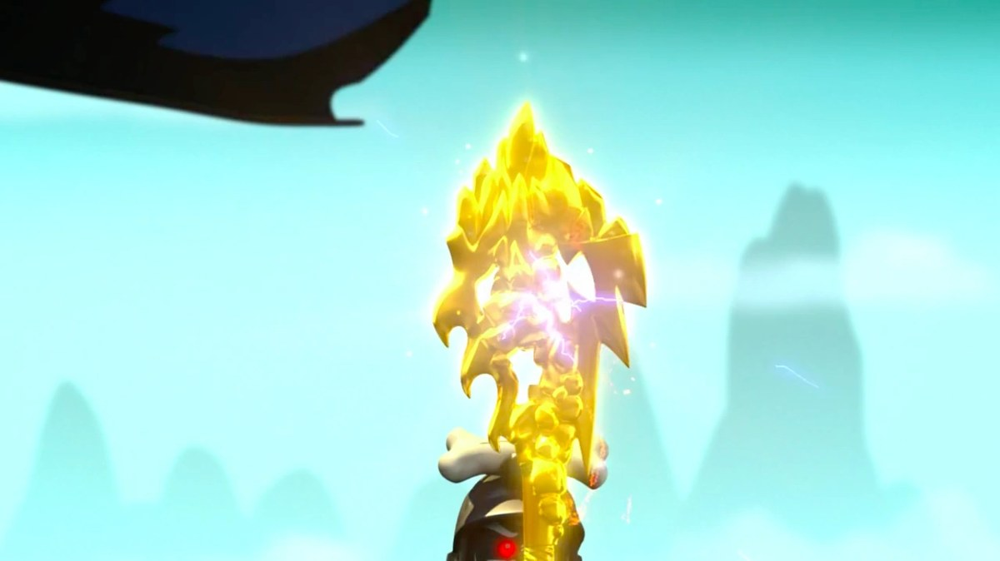

The Mega Weapon
The combined form — all four Golden Weapons fused at the Golden Peaks into a Staff of Creation. It grants wishes. It duplicates the living, resurrects the dead, and rewinds time itself. It can only create, never destroy — and every creation is paid for in the wielder's own power. Touch it without power of your own, and it will unmake you.

The Mega Weapon
Metaphysical Law: To create is to spend yourself. There is no other currency.
Properties & techniques
Exact player-facing procedures
Field notes. Subject: the wish, weaponized. Three truths govern it. First: the Mega Weapon is the strongest relic in this archive and the most honest — its price is printed on its face. Every use drains the wielder's own power, measurably, permanently until rest, because creation ex nihilo is a lie the universe audits. Garmadon learned this wielding it; the archive has the receipts. Second: the creation-only restriction is absolute, not moral. The staff cannot destroy, damage directly, or unmake — not because it refuses, but because it cannot; destruction is simply not in its vocabulary. This is the hard limit that keeps a wish-granting staff playable: you may create a wall, never collapse one. Third: the disintegration is not a defense mechanism. The staff does not punish the powerless — it simply has no setting for them. A creature without cursed energy or elemental power touching the staff is exposed to raw creation without a vessel to hold it, and raw creation unmakes what cannot contain it. Do not hand this to a civilian. Ever.
Relic profile
2d10 force · +4 to attack and damage rolls · Relic DC
Jujutsu origin
Forged by Garmadon at the Golden Peaks by fusing all four Golden Weapons — earth, lightning, ice, and fire folded into a single Staff of Creation. In jujutsu terms, the fusion did not add the four powers together; it multiplied them past their elements into the thing the elements were made of. The First Spinjitzu Master created Ninjago with the four weapons. The Mega Weapon is what the four weapons were always trying to become: the act of creation, holding still long enough to be aimed.
Creation — Action · 10 CE
Speak a desire. Create virtually anything — an object, a creature, a structure, a phenomenon — within 120 ft, up to a 30-ft cube. The GM adjudicates scope and may demand up to 20 CE for wishes of campaign scale. The staff cannot destroy, damage directly, or unmake anything. Attempts to do so fizzle, and the CE is still spent. Created things are real and permanent unless the GM rules otherwise.
Duplication — Action · 8 CE
Touch a creature and create its duplicate — as Garmadon created the Bizarro Ninja. The duplicate is a twisted copy: same statistics, opposite disposition, controlled by the GM, hostile to the original's goals. It lasts 24 hours, then crumbles to golden dust. You may only maintain one duplicate at a time.
Resurrection — 1 hour ritual · 15 CE
Return a dead creature to life, as the staff returned the Grundle. The creature returns as it was — but something is always slightly wrong, the GM's choice, and the wrongness is permanent. Creatures dead longer than a year, or whose souls are otherwise bound, cannot be returned.
Time Slip — Action · 12 CE, once per 7 days
Rewind up to 1 minute for a single willing creature — wounds close, spent resources return, death within the minute is undone — or send one willing creature backward in time to a moment the GM permits. Paradoxes, consequences, and pursuit through time are the GM's playground; the staff opens the door, it does not manage what walks through.
The Price — Power Drain
Every use of Creation, Duplication, Resurrection, or Time Slip drains the wielder: lose 1 maximum CE per use until you finish a long rest (this stacks). If your maximum CE reaches 0, you fall unconscious and cannot be woken except by a long rest. The staff does not take payment in anything else.
The Price — Disintegration
Any creature without cursed energy or elemental power that touches the staff takes 20d10 force damage, no save — raw creation unmakes what cannot contain it. Even CE-capable wielders take 4d10 force damage the first time they grasp it. Attunement does not waive this; it only means you survived it once.
Cursed-tool attunement
Campaign canon